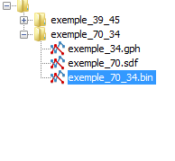

Interface utilisateur - Arbre de sélection
DisToxic intègre la notion de projet. Lors du premier lancement de DisToxic, vous devrez choisir
un répertoire dans votre système dans lequel vous stockerez tous vos projets.
Votre espace de travail est donc listé dans une zone dédiée dans lequel vous retrouverez tous vos projets :

Un projet est constitué de 3 fichiers :
- Un fichier identifiant des moléules (fichier.sdf).
- Un fichier identifiant des fragments toxiques intégrant des molécules
(fichier.gph).
- Un fichier liant les fragments toxiques à leur molécule (fichier.bin).
Lors ce que vous cliquez sur les fichiers d'un même projet, ces derniers sont associés à des tableaux dans lequel vous
pouvez éditer des données. De même que si vous cliquez sur un autre fichier d'un autre projet, un nouvel onglet s'ouvrira.